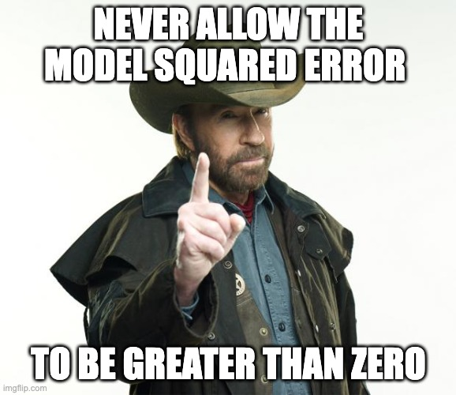

{kind=link}
| package | version | source |
|---|---|---|
| bookdown | 0.32 | CRAN (R 4.2.0) |
| broom | 1.0.3 | CRAN (R 4.2.0) |
| corrr | NA | NA |
| dials | 1.1.0 | CRAN (R 4.2.0) |
| downlit | 0.4.2 | CRAN (R 4.2.0) |
| dplyr | 1.1.0 | CRAN (R 4.2.0) |
| ggplot2 | 3.4.1 | CRAN (R 4.2.0) |
| glmnet | 4.1-6 | CRAN (R 4.2.0) |
| infer | 1.0.4 | CRAN (R 4.2.0) |
| ISLR | NA | NA |
| kknn | 1.3.1 | CRAN (R 4.2.0) |
| klaR | 1.7-1 | CRAN (R 4.2.0) |
| MASS | 7.3-58.2 | CRAN (R 4.2.0) |
| modeldata | 1.0.1 | CRAN (R 4.2.0) |
| parsnip | 1.0.3 | CRAN (R 4.2.0) |
| patchwork | 1.1.2 | CRAN (R 4.2.0) |
| purrr | 1.0.1 | CRAN (R 4.2.0) |
| randomForest | 4.7-1.1 | CRAN (R 4.2.0) |
| ranger | 0.14.1 | CRAN (R 4.2.0) |
| readr | 2.1.4 | CRAN (R 4.2.0) |
| rsample | 1.1.1 | CRAN (R 4.2.0) |
| rstatix | 0.7.2 | CRAN (R 4.2.0) |
| tibble | 3.1.8 | CRAN (R 4.2.0) |
| tidymodels | 1.0.0 | CRAN (R 4.2.0) |
| tidyr | 1.3.0 | CRAN (R 4.2.0) |
| tidyverse | 1.3.2 | CRAN (R 4.2.0) |
| tune | 1.0.1 | CRAN (R 4.2.0) |
| vip | 0.3.2 | CRAN (R 4.2.0) |
| workflows | 1.1.2 | CRAN (R 4.2.0) |
| workflowsets | 1.0.0 | CRAN (R 4.2.0) |
| xgboost | 1.6.0.1 | CRAN (R 4.2.0) |
| yardstick | 1.1.0 | CRAN (R 4.2.0) |
Grundlagen der Prognosemodellierung 🔮🧰
1 Zu diesem Buch

1.1 Was rät Meister Yoda?
Meister Yoda rät: Lesen Sie die Hinweise (Abbildung 1.1).

1.2 Zitation
Nutzen Sie diese DOI, um dieses Buch zu zitieren: 
1.3 Technische Details
Diese Version des Buches wurde erstellt am: 2023-03-13 14:21:16
Die URL zu diesem Buch lautet https://sebastiansauer.github.io/datascience1/ und ist bei GitHub Pages gehostet.
Den Quellcode finden Sie in diesem Github-Repo.
Sie haben Feedback, Fehlerhinweise oder Wünsche zur Weiterentwicklung? Am besten stellen Sie hier einen Issue ein.
Dieses Projekt steht unter der MIT-Lizenz.
Dieses Buch wurde in RStudio mit Hilfe von bookdown geschrieben.
Diese Version des Buches wurde mit der R-Version R version 4.2.1 (2022-06-23) und den folgenden Paketen erstellt: